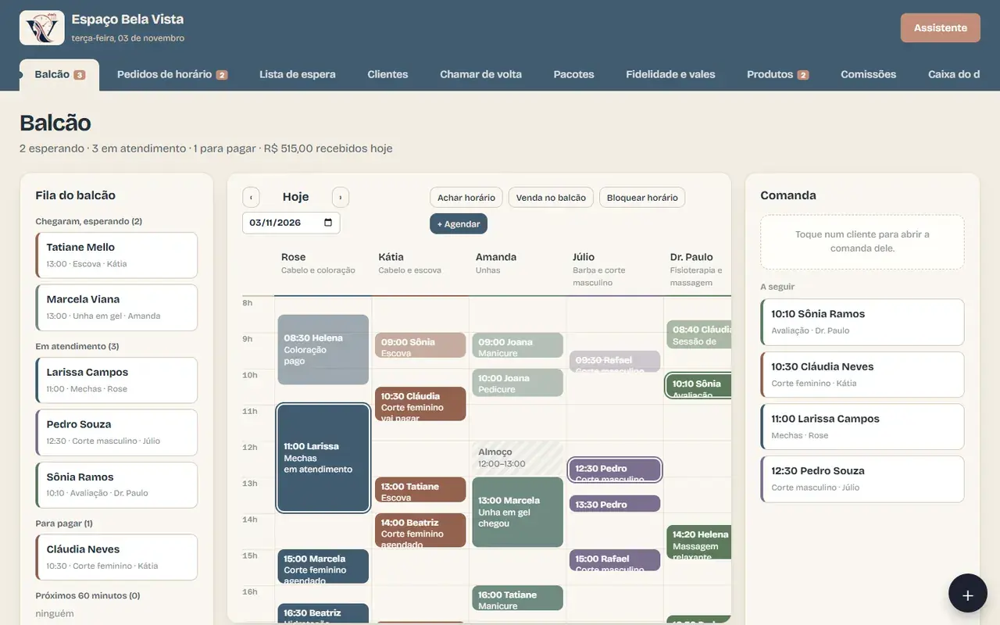
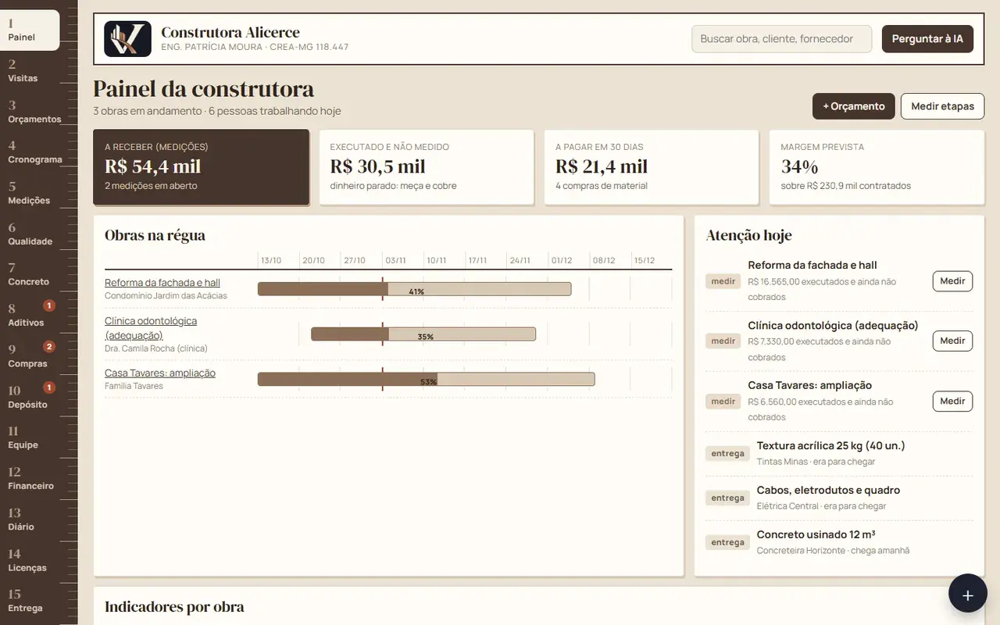
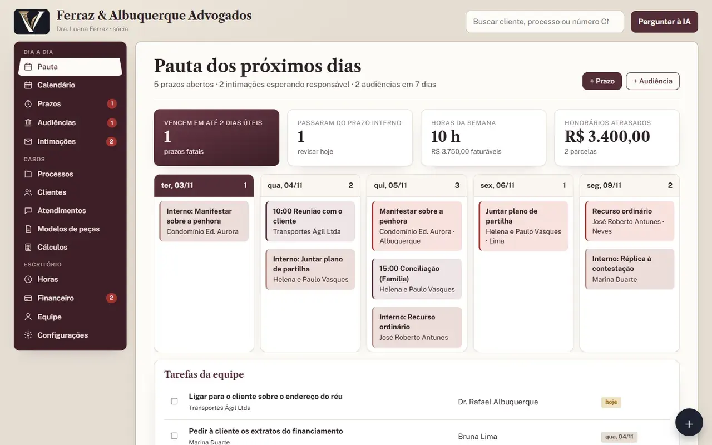
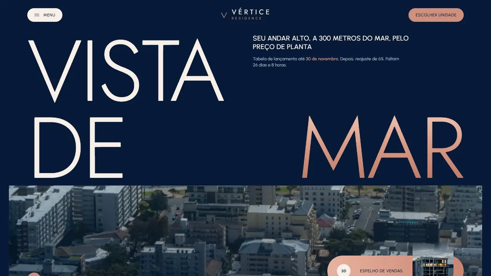
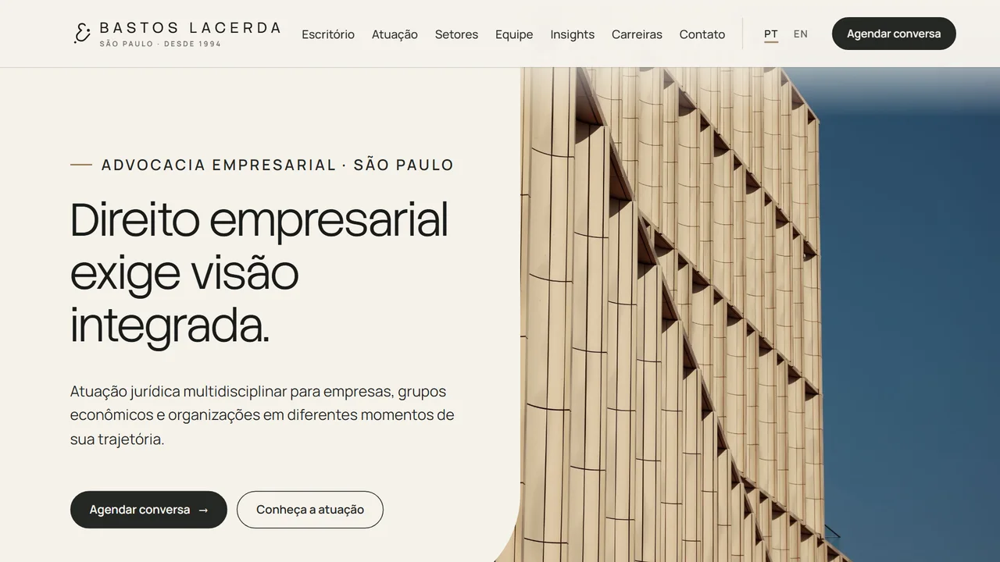
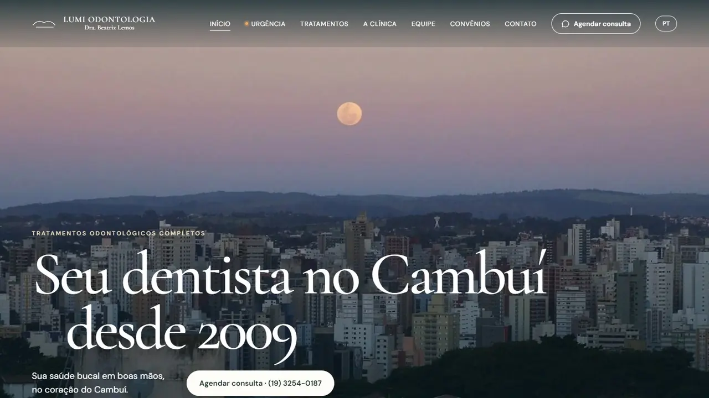

Blue Rose Express
O que a Blue Rose já construiu.
Quatro sistemas, quatro sites, dois projetos para clientes e uma plataforma de arquitetura. Telas reais: passe por elas e abra o que quiser testar.
Sistema pronto · salão, estética e barbearia
Veltria Agenda
Horários de cada profissional, confirmação pelo WhatsApp e link para a cliente marcar sozinha.
Abrir a demonstração

Sistema pronto · empresa de serviço
Veltria Financeiro
Saldo, contas a pagar e a receber, cobrança de quem atrasou e previsão do caixa dos próximos meses.
Abrir a demonstração
Sistema pronto · obras e reformas
Veltria Obras
Cronograma, gastos, equipe e o que falta receber de cada obra, do escritório ou do canteiro.
Abrir a demonstração

Sistema pronto · advocacia
Veltria Jurídico
Busca as intimações do DJEN sozinho, conta os prazos e põe tudo na agenda de cada advogado.
Abrir a demonstração
Site de exemplo · construtora
Monolito Engenharia
Casas de alto padrão, com uma maquete em 3D que o visitante gira com o dedo ou o mouse.
Abrir o siteSite de exemplo · lançamento imobiliário
Vértice Residence
Um prédio em 3D e o espelho de vendas: quem visita escolhe o andar e a unidade na própria página.
Abrir o site
Site de exemplo · advocacia empresarial
Bastos Lacerda
Uma estátua em 3D e, logo no topo, um campo para a empresa descrever o problema.
Abrir o site
Site de exemplo · odontologia
Lumi Odontologia
Foto real do bairro e o agendamento da consulta logo na primeira tela.
Abrir o site
Projeto para cliente · clínica de fisioterapia e estética
Clínica LEMAHE
Site sob medida, com os tratamentos explicados passo a passo e o agendamento da avaliação em poucos cliques.
Telas sem nomes, contatos ou endereço, para preservar a cliente e os pacientes.


Projeto para cliente · loja de celulares
PlayCell
Sistema feito só para esta loja: compra e venda de aparelhos, estoque por IMEI, lojistas, caixa, garantias e etiquetas com código de barras.
Tela da versão de demonstração, com dados de exemplo. Nenhum dado da loja aparece aqui.

Plataforma em desenvolvimento
Multimodal Architecture
Desenhe a planta em 2D, veja o mesmo projeto em 3D e exporte em PDF, DXF, SVG ou GLB. A demonstração usa dados fictícios e não pede conta.


Agora é com você
Qual desses é o seu próximo passo?
Nos sites de exemplo, as marcas, as pessoas e os preços são fictícios.